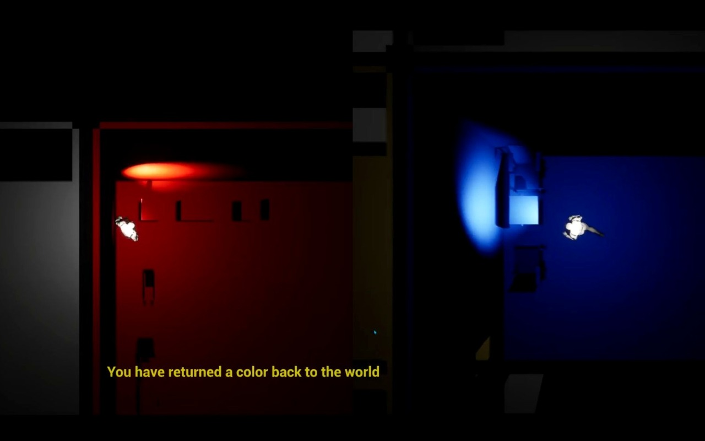
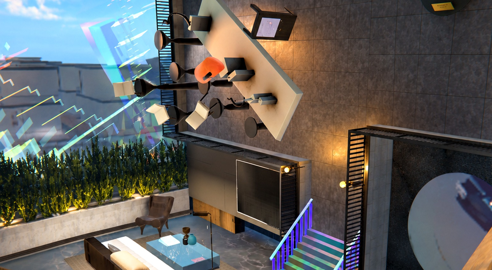
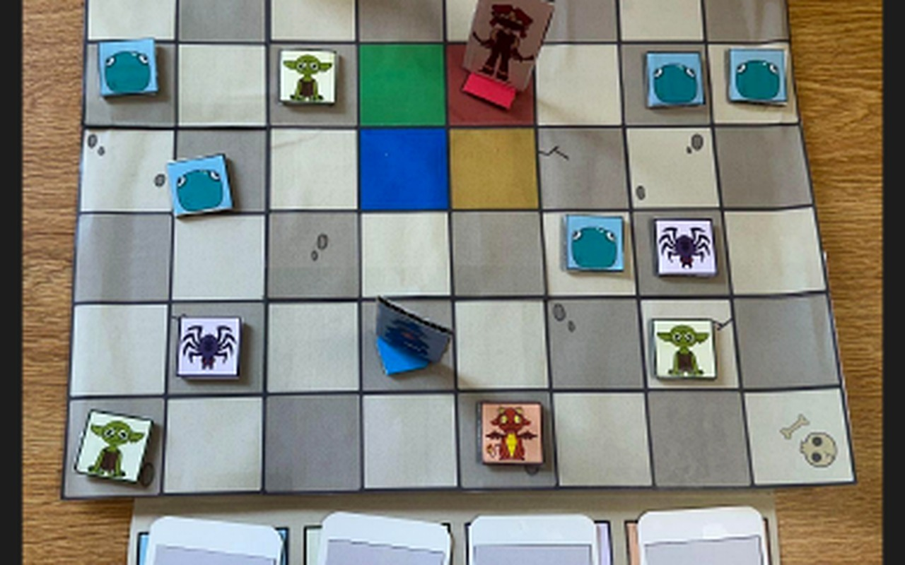

Unreal · OSC · Arduino · Co-op
Mixed Reality Game
A mixed-reality co-op prototype connecting digital gameplay with physical interaction.
Watch project videoSystems-driven game designer focused on co-op, combat, and class design.
Projects showing how I approach mechanics, player learning, iteration, and implementation constraints.

A split-screen puzzle game about combining fragmented objects through perspective, communication, and spatial reasoning.
Designing combat systems and levels, then iterating on usability and player experience through playtesting feedback.
A cooperative typing-combat game built around class identity, skill expression, and team synergy.
I enjoy taking a gameplay idea, turning it into something players can interact with, and refining it through playtesting and iteration. My projects have taken me across combat, classes, puzzles, co-op mechanics, and level design, and I like exploring how those different systems work together to create a stronger experience.
My background in electrical engineering and computer science helps me work comfortably between design intent and technical implementation.
A few smaller projects exploring different kinds of interaction and systems design. View more work

A mixed-reality co-op prototype connecting digital gameplay with physical interaction.
Watch project video
A tabletop dungeon crawler exploring spatial combat patterns and indirect player competition.